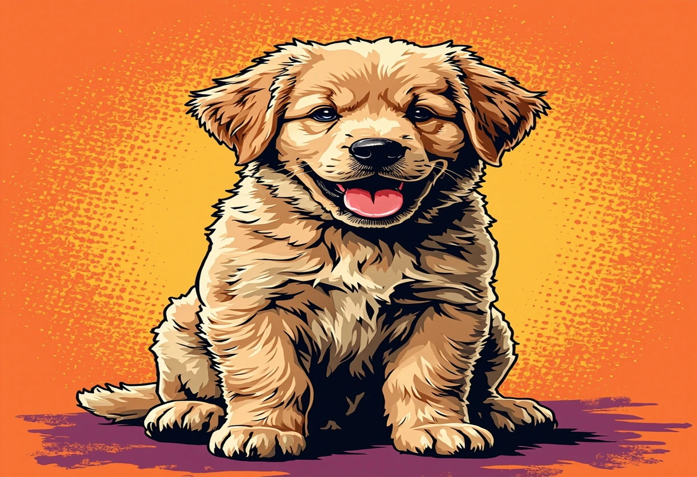

Der Golden Retriever – mit seinem sanften Blick, dem seidig-goldenen Fell und seinem unerschütterlich freundlichen Wesen erobert er seit über 100 Jahren die Herzen von Hundeliebhabern auf der ganzen Welt. Keine andere Hunderasse verkörpert den Begriff „Familienhund" so vollkommen wie der Golden Retriever. Er ist nicht nur ein wunderschöner Hund, sondern auch ein intelligenter, geduldiger und unglaublich liebevoller Begleiter, der in unzähligen Familien, aber auch als Therapiehund, Assistenzhund und Rettungshund unverzichtbare Dienste leistet.
In Deutschland zählt der Golden Retriever seit Jahrzehnten zu den beliebtesten Hunderassen überhaupt. Sein ausgeglichenes Temperament, seine hohe Lernbereitschaft und seine fast grenzenlose Geduld mit Kindern machen ihn zur idealen Wahl für Familien, aber auch für aktive Singles und Paare, die einen treuen Begleiter für alle Lebenslagen suchen. Doch der Golden Retriever ist mehr als nur ein hübsches Gesicht – er ist ein geborener Apportierhund mit einer bemerkenswerten Arbeitsmoral und einem ausgeprägten Bedürfnis nach menschlicher Nähe.
In diesem umfassenden Rasseguide erfährst Du alles, was Du über den Golden Retriever wissen musst: von seiner faszinierenden Entstehungsgeschichte in den schottischen Highlands über seinen Rassestandard und sein freundliches Wesen bis hin zu konkreten Tipps für Erziehung, Ernährung, Pflege und Gesundheit. Du erfährst, für wen diese wunderbare Rasse geeignet ist – und für wen eher nicht. Denn auch wenn der Golden Retriever ein verhältnismäßig pflegeleichter Hund ist: Er braucht Zeit, Zuwendung und eine verantwortungsvolle Haltung, um sein volles Potenzial als Traumbegleiter zu entfalten.
📢 Google AdSense
Anzeige
Herkunft & Geschichte des Golden Retrievers
Die Wurzeln des Golden Retrievers liegen im Schottland des 19. Jahrhunderts – genauer gesagt auf dem Anwesen Guisachan in der Grafschaft Inverness-Shire in den schottischen Highlands. In den weitläufigen Moorlandschaften, durchzogen von zahlreichen Flüssen, Seen und Mooren, benötigten Jäger einen Hund, der hervorragende Apportierfähigkeiten besaß und gleichzeitig wasserfreudig und ausdauernd genug war, um erlegtes Wassergeflügel auch aus eisigen Gewässern zu bergen.
Die systematische Zucht des Golden Retrievers war für die damalige Zeit außergewöhnlich akribisch dokumentiert. Lord Tweedmouth führte über mehrere Generationen hinweg ein detailliertes Zuchtbuch, in dem er jede Verpaarung, jeden Wurf und jede wichtige Beobachtung festhielt. Dieses Zuchtbuch ist bis heute erhalten und gilt als eines der ältesten und vollständigsten Dokumente einer kontrollierten Hundezucht überhaupt. Es zeigt, dass die gesamte Rasse auf einen einzigen gelben Retriever-Rüden namens Nous und eine Tweed Water Spaniel-Hündin namens Belle zurückgeht.
Der wohl bedeutendste Name in der Geschichte dieser Rasse ist Sir Dudley Marjoribanks, später bekannt als Lord Tweedmouth. Er gilt als der Begründer des Golden Retrievers und führte auf seinem Anwesen über drei Jahrzehnte hinweg ein systematisches Zuchtprogramm durch. Im Jahr 1868 kreuzte er einen gelben Retriever-Rüden namens Nous mit einer Tweed Water Spaniel-Hündin namens Belle. Der Tweed Water Spaniel ist heute leider ausgestorben, spielte aber eine entscheidende Rolle: Er verlieh der Rasse ihre charakteristische Wasserliebe, ihr dichtes, wasserabweisendes Fell und ihre freundliche Wesensart.
Die Welpen aus dieser ersten Verpaarung – Crocus, Primrose, Cowslip und ein weiterer – bildeten den Grundstock der gesamten Rasse. Lord Tweedmouth führte über mehrere Generationen hinweg ein penibel geführtes Zuchtbuch, das bis heute erhalten ist und als eines der ältesten dokumentierten Zuchtprogramme einer Hunderasse gilt. In den folgenden Jahren wurden weitere Einkreuzungen mit dem Labrador Retriever, dem Irish Setter und sogar mit einem Bloodhound vorgenommen, um das Jagdverhalten und die hervorragende Nase weiter zu verfeinern.
Der Kennel Club in England erkannte den Golden Retriever im Jahr 1911 offiziell an – zunächst unter der Bezeichnung „Retriever (Golden or Yellow)". Die heutige offizielle Rassebezeichnung Golden Retriever wurde 1920 eingeführt. In Deutschland wird die Rasse vom Verband für das Deutsche Hundewesen (VDH) und dem Deutschen Retriever Club (DRC) betreut, der großen Wert auf gesundheitliche Zuchtstandards und strenge Zuchtkontrollen legt.
Bis heute hat der Golden Retriever eine bemerkenswerte Entwicklung durchgemacht. Seine Vielseitigkeit hat ihn zu einem der gefragtesten Assistenzhunde, Blindenhunde, Therapiehunde und Rettungshunde der Welt gemacht. In der Therapiearbeit zeigen Golden Retriever ein außergewöhnliches Einfühlungsvermögen und werden erfolgreich in Krankenhäusern, Pflegeheimen und psychotherapeutischen Einrichtungen eingesetzt. Ob als treuer Familienhund oder als professioneller Assistenzhund – der Golden Retriever ist aus der modernen Hundewelt nicht mehr wegzudenken.
📢 Google AdSense
Anzeige
Rassestandard & Erscheinungsbild
Der Golden Retriever ist ein mittelgroßer bis großer, kräftiger und wohlproportionierter Hund. Laut dem gültigen FCI-Rassestandard (Standard-Nummer 111, Gruppe 8 – Apportierhunde, Stöberhunde, Wasserhunde) gelten folgende Richtwerte: Rüden erreichen eine Widerristhöhe von 56 bis 61 Zentimetern bei einem Gewicht von 30 bis 34 Kilogramm. Hündinnen sind mit einer Schulterhöhe von 51 bis 56 Zentimetern etwas kleiner und wiegen zwischen 25 und 32 Kilogramm.
Der Körperbau ist harmonisch und athletisch: Die Rasse ist bekannt für ihre ausgewogenen Proportionen und ihre geschmeidige, kraftvolle Bewegung. Der Golden Retriever bewegt sich mit einer fließenden, raumgreifenden Gangart, die seine Herkunft als ausdauernder Jagd- und Apportierhund widerspiegelt. Die Rute wird in der Bewegung fröhlich getragen, aber nie über die Rückenlinie gehoben – ein wichtiges Detail im Rassestandard.
Der Golden Retriever besitzt ein freundliches, intelligentes Gesicht mit dunklen, mandelförmigen Augen, die einen sanften und aufmerksamen Ausdruck vermitteln. Die mittelgroßen, hängenden Ohren sind gut behaart und liegen eng am Kopf an. Die Schnauze ist kräftig und breit, die Zähne bilden ein vollständiges Scherengebiss. Die Nase ist gut entwickelt und stets schwarz – ein wichtiges Rassemerkmal.
Der Körperbau ist harmonisch und athletisch: Die Brust ist tief und gut gewölbt, die Rippen sind gut gewölbt und reichen weit nach hinten, die Oberlinie ist gerade, die Lendenpartie kurz und muskulös. Die Bewegung des Golden Retrievers ist kraftvoll, geschmeidig und ausdauernd – ein wesentliches Qualitätsmerkmal im Rassestandard, das auf seine ursprüngliche Verwendung als Jagdhund zurückgeht.
Das Fell – das Markenzeichen der Rasse
Das Fell ist das wohl markanteste äußere Merkmal des Golden Retrievers. Es besteht aus einem dichten, wasserabweisenden Doppelfell mit einer weichen Unterwolle und einem glatten oder leicht welligen Deckhaar. Die charakteristischen Federhaare – auch Fahnen genannt – an der Rutenunterseite, der Rückseite der Vorderläufe und der Vorderseite der Hinterläufe sind ein wesentliches Rassemerkmal und verleihen dem Golden Retriever sein typisches, elegantes Erscheinungsbild.
Die Fellfarbe variiert in verschiedenen Goldtönen: von hellem Creme über hellgolden bis zu sattem Gold. Der Rassestandard erlaubt alle Goldtöne, während rot-braune oder mahagonifarbene Töne nicht zulässig sind. Auch weiße Abzeichen sind unerwünscht (mit Ausnahme weniger heller Stellen an der Brust). Die Nase ist stets schwarz – ein wichtiges Unterscheidungsmerkmal zu anderen Retriever-Rassen.
Kopf und Ausdruck
Der Kopf ist breit und gut modelliert, mit einem deutlichen Stop. Die Augen sind dunkelbraun, weit auseinanderstehend und vermitteln einen freundlichen, intelligenten und sanften Ausdruck – das berühmte „Goldi-Auge". Die Ohren sind mittelgroß, hängen seitlich herab und bilden die typischen Schlappohren. Die Schnauze ist kräftig und breit mit einem vollständigen Scherengebiss.
Showlinien und Arbeitslinien
Wie bei vielen Gebrauchshunderassen haben sich auch beim Golden Retriever unterschiedliche Zuchtlinien herausgebildet. Showlinien werden nach optischen Gesichtspunkten gezüchtet – sie sind oft etwas kräftiger gebaut, haben mehr Unterwolle und Federhaare und sind im Temperament ruhiger. Arbeitslinien dagegen werden auf jagdliche und sportliche Fähigkeiten gezüchtet, sind schlanker, haben weniger Unterwolle und zeigen ein höheres Energieniveau. Für den Familienhund spielen diese Unterschiede eine untergeordnete Rolle – beide Linien eignen sich hervorragend als Begleithunde.
📢 Google AdSense
Anzeige
Charakter & Wesen: Das goldene Herz
Der Golden Retriever ist bekannt für sein außergewöhnlich freundliches, ausgeglichenes und zuverlässiges Wesen. Er wurde über Generationen hinweg als enger Begleithund und Familienmitglied gezüchtet – was ihn zu einem der menschenbezogensten Hunde überhaupt macht. Der Rassestandard beschreibt das Wesen als freundlich, zuverlässig und vertrauensvoll – und das ist keine Übertreibung, sondern das Ergebnis einer mehr als 150-jährigen konsequenten Selektion auf diese Eigenschaften.
Ein Golden Retriever, der aggressives oder ängstliches Verhalten zeigt, stammt entweder aus schlechter Zucht oder wurde nicht artgerecht gehalten. Er wurde über Generationen hinweg als enger Begleithund und Familienmitglied gezüchtet – das macht ihn zu einem der menschenbezogensten Hunde überhaupt. Ein Golden Retriever, der aggressives oder ängstliches Verhalten zeigt, stammt entweder aus schlechter Zucht oder wurde nicht artgerecht gehalten.
Die wichtigsten Charaktereigenschaften im Überblick:
- Freundlichkeit und Gutmütigkeit: Gegenüber Menschen, anderen Hunden und sogar fremden Tieren ist der Golden Retriever in der Regel aufgeschlossen und friedlich. Aggressives Verhalten ist extrem untypisch für die Rasse und sollte immer als Warnsignal für ein zugrundeliegendes Problem (Schmerzen, Angst, schlechte Haltung) verstanden werden. Die Rasse hat eine extrem hohe Reizschwelle. Aggressives Verhalten ist extrem untypisch. Die Rasse hat eine extrem hohe Reizschwelle – das macht sie zu einem sicheren Familienhund, der auch von Kindern einmal etwas unsanft angefasst werden kann, ohne aggressiv zu reagieren.
- Intelligenz und Lernbereitschaft: Der Golden Retriever zählt zu den intelligentesten Hunderassen der Welt. In Stanley Corens Rangliste belegt er Platz 4 von 138 Rassen. Noch wichtiger ist seine hohe Lernbereitschaft: Er arbeitet gerne mit Menschen zusammen, versteht schnell, was von ihm erwartet wird, und ist stets bemüht, seinen Halter zufriedenzustellen.
- Geduld und Kinderfreundlichkeit: Diese Rasse ist für ihre unglaubliche Geduld mit Kindern bekannt und gehört zu den kinderfreundlichsten Hunderassen überhaupt. Golden Retriever tolerieren das manchmal ungestüme Verhalten von Kleinkindern und behalten auch in hektischen Situationen einen kühlen Kopf.
- Verspieltheit und Lebensfreude: Trotz ihrer stattlichen Größe bewahren sich Golden Retriever oft bis ins hohe Alter eine spielerische, fast welpenhafte Art. Diese ansteckende Lebensfreude ist einer der Gründe, warum sie in der Therapiearbeit so erfolgreich sind.
- Emotionale Sensibilität: Golden Retriever sind Soft Dogs – sie reagieren sensibel auf die Stimmung ihres Halters und auf negative Erfahrungen. Ein lautes Wort kann sie tief verunsichern. Diese Sensibilität macht sie zu einfühlsamen Therapiehunden, erfordert aber eine liebevolle, geduldige Erziehung.
Vergleichstabelle: Golden Retriever, Labrador & Deutscher Schäferhund
| Eigenschaft | Golden Retriever | Labrador Retriever | Deutscher Schäferhund |
|---|---|---|---|
| Größe (Rüde) | 56–61 cm | 56–57 cm | 60–65 cm |
| Gewicht (Rüde) | 30–34 kg | 29–36 kg | 30–40 kg |
| Fellpflege-Aufwand | mittel–hoch (2–3×/Woche) | gering–mittel (1–2×/Woche) | mittel (1–2×/Woche) |
| Familienfreundlichkeit | ⭐⭐⭐⭐⭐ (exzellent) | ⭐⭐⭐⭐⭐ (exzellent) | ⭐⭐⭐⭐ (sehr gut) |
| Kinderfreundlichkeit | ⭐⭐⭐⭐⭐ (exzellent) | ⭐⭐⭐⭐⭐ (exzellent) | ⭐⭐⭐⭐ (sehr gut) |
| Lernfähigkeit | ⭐⭐⭐⭐ (Top 5) | ⭐⭐⭐⭐ (Top 7) | ⭐⭐⭐⭐⭐ (Top 3) |
| Schutztrieb | gering–mittel | gering–mittel | ausgeprägt |
| Jagdtrieb | mittel | hoch | niedrig–mittel |
| Bewegungsbedarf | hoch (1–2 h/Tag) | sehr hoch | sehr hoch |
| Bellfreude | gering | gering | mittel–hoch |
| Lebenserwartung | 10–12 Jahre | 10–12 Jahre | 9–13 Jahre |
| Anfängereignung | ⭐⭐⭐⭐⭐ (ideal) | ⭐⭐⭐⭐ (sehr gut) | ⭐⭐ (anspruchsvoll) |
📢 Google AdSense
Anzeige
Erziehung & Training
Die Erziehung eines Golden Retrievers gestaltet sich in der Regel sehr angenehm. Dank seiner hohen Intelligenz, seiner natürlichen Lernbereitschaft und seinem ausgeprägten Wunsch, dem Menschen zu gefallen, gehört er zu den am einfachsten zu erziehenden Hunderassen. Dennoch braucht auch dieser freundliche Hund klare Regeln, konsequente Führung und vor allem positive Verstärkung, um zu einem ausgeglichenen Begleiter heranzuwachsen.
Welpenentwicklung – Von der Geburt bis zum ersten Lebensjahr
Die Entwicklung eines Golden Retriever Welpen durchläuft mehrere Phasen. In den ersten 8 Wochen bei der Züchterin lernt der Welpe die grundlegenden Sozialregeln im Umgang mit seinen Geschwistern und der Mutterhündin. Mit etwa 8 bis 9 Wochen zieht der Welpe dann in sein neues Zuhause ein – der ideale Zeitpunkt für den Beginn der engen Bindung zum neuen Halter.
In den ersten Tagen geht es vor allem um Vertrauensaufbau und eine sanfte Eingewöhnung mit festen Schlaf- und Fütterungszeiten. Der Welpe sollte seinen neuen Lebensraum in Ruhe erkunden dürfen und nicht mit zu vielen neuen Eindrücken überfordert werden. Feste Rituale wie ein Begrüßungsritual am Morgen oder ein bestimmtes Kommando vor der Fütterung geben dem Welpen Sicherheit und Orientierung.
Stubenreinheit und Grundkommandos
Mit etwa acht bis neun Wochen zieht der Golden Retriever Welpe in sein neues Zuhause ein. In den ersten Tagen geht es um Vertrauensaufbau und eine sanfte Eingewöhnung mit festen Schlaf- und Fütterungszeiten. Die Stubenreinheit gelingt bei Golden Retrievern in der Regel schnell – ein fester Rhythmus und viel Lob sind der Schlüssel zum Erfolg. Die Sozialisierungsphase (8–18 Wochen) ist die wichtigste Zeit: Der Welpe sollte möglichst viele Menschen, Umgebungen, Geräusche und andere Hunde in kontrollierten Situationen kennenlernen.
Die Grundkommandos wie Sitz, Platz, Hier und Aus sollten frühzeitig spielerisch trainiert werden. Golden Retriever reagieren hervorragend auf positive Verstärkung – Leckerlis, Lob und Spielzeug sind die effektivsten Motivationsmittel. Trainieren Sie in kurzen Einheiten von maximal fünf bis zehn Minuten und beenden Sie jede Einheit mit einem Erfolgserlebnis.
Erwachsenentraining
Ein Golden Retriever braucht auch im Erwachsenenalter eine konsequente, aber liebevolle Führung. Harte Strafen oder lautes Anschreien sind bei dieser sensiblen Rasse absolut kontraproduktiv und können das Vertrauensverhältnis nachhaltig stören. Der Golden Retriever liebt Kopfarbeit und Apportierspiele gleichermaßen. Besonders empfehlenswert sind Dummytraining, Nasenarbeit, Agility, Obedience und Trickdog. Ein Golden Retriever, der körperlich und geistig ausgelastet ist, ist ein entspannter und ausgeglichener Begleiter.
📢 Google AdSense
Anzeige
Ernährung
Eine ausgewogene, hochwertige Ernährung ist eine der wichtigsten Säulen für die Gesundheit eines Golden Retrievers. Wie viele große Hunderassen neigt auch der Golden Retriever zu Übergewicht – nicht nur wegen seines unersättlichen Appetits, sondern auch aufgrund einer genetischen Veranlagung zur Fetteinlagerung. Die tägliche Futtermenge sollte daher stets kontrolliert und an den tatsächlichen Energiebedarf angepasst werden.
Golden Retriever Welpen sollten mit speziellem Welpenfutter für große Rassen ernährt werden, das einen kontrollierten Kalzium- und Phosphorgehalt für ein gesundes Knochenwachstum aufweist. Ausgewachsene Hunde benötigen hochwertiges Adultfutter mit 22–26 % Rohprotein und 12–16 % Fett. Im Seniorenalter ab etwa 7–8 Jahren ist ein leicht verdauliches Seniorfutter mit Gelenk unterstützenden Zusätzen wie Glucosamin und Chondroitin empfehlenswert.
Die Wahl der richtigen Fütterungsmethode hängt von den persönlichen Vorlieben und der Zeit des Halters ab. Hochwertiges Trockenfutter ist die bequemste Lösung – achten Sie auf einen Fleischanteil von mindestens 60–70 Prozent und verzichten Sie auf Futter mit künstlichen Zusatzstoffen, Zucker oder billigen Füllstoffen wie Mais und Weizen. Nassfutter hat einen höheren Feuchtigkeitsgehalt und kommt der natürlichen Beutetier-Zusammensetzung näher, ist aber in der Regel teurer und weniger ergiebig.
BARF (biologisch artgerechte Rohfütterung) wird immer beliebter. Befürworter berichten von glänzendem Fell, gesünderen Zähnen und mehr Vitalität. Bei der BARF-Ernährung eines Golden Retrievers ist besonders auf eine ausgewogene Nährstoffzusammensetzung zu achten – ein Gespräch mit einem Tierarzt oder Ernährungsberater ist vor der Umstellung dringend zu empfehlen. Selbstgekochtes Futter ist ebenfalls eine Option, erfordert aber eine besonders sorgfältige Planung.
Bei der Frage BARF oder Fertigfutter gibt es keine pauschale Antwort – beide Methoden sind möglich, wenn sie richtig gemacht werden. Wichtig ist bei dieser Rasse vor allem die Gewichtskontrolle: Die Rippen sollten tastbar, aber nicht sichtbar sein. Ein gesunder Golden Retriever hat eine deutliche Taille. Zu viele Leckerlis – die Rasse bettelt meisterhaft – und hastiges Fressen sind die häufigsten Ernährungsfehler.📢 Google AdSense
Anzeige
Pflege & Fellpflege
Das dichte Doppelfell des Golden Retrievers ist wunderschön, stellt aber eine nicht zu unterschätzende Herausforderung dar. Die Rasse haart ganzjährig, und während des Fellwechsels im Frühjahr und Herbst wird das Haaren noch intensiver. Planen Sie mindestens zwei- bis dreimal pro Woche eine gründliche Bürsteneinheit von 15–20 Minuten ein. Während des Fellwechsels sollte täglich gebürstet werden.
Die richtige Pflegeroutine umfasst eine Unterwollbürste zur Entfernung der losen Unterwolle, einen Gummistriegel für die tägliche Pflege und einen Metallkamm für die Federhaare an den Läufen, der Rute und der Brust. Baden Sie Ihren Golden Retriever nur bei Bedarf (etwa alle 6–8 Wochen) mit einem milden Hundeshampoo. Zu häufiges Baden entzieht der Haut die natürlichen Schutzfette.
Für die Krallenpflege gilt: Wenn Sie auf hartem Boden ein Klickgeräusch hören, wenn Ihr Hund läuft, sind die Krallen definitiv zu lang. Lassen Sie sich bei Bedarf vom Tierarzt oder Hundefriseur zeigen, wie die Krallen richtig gekürzt werden. Bei der Zahnpflege sind regelmäßiges Bürsten mit Hunde-Zahnpasta und Kauartikel wie Bullysticks oder Rinderhautknochen ideal, um Zahnstein vorzubeugen.
Neben der Fellpflege sind auch die Krallenpflege (alle 4–6 Wochen) und die Ohrenkontrolle (wöchentlich) wichtige Aspekte der Gesundheitsvorsorge. Die Schlappohren des Golden Retrievers sind anfällig für Ohrenentzündungen, da die Belüftung eingeschränkt ist. Kontrollieren Sie die Ohren daher regelmäßig auf Rötungen, Geruch oder übermäßigen Ohrenschmalz.
📢 Google AdSense
Anzeige
Gesundheit & häufige Krankheiten
Der Golden Retriever ist grundsätzlich eine robuste Rasse, hat aber wie viele reinrassige Hunde eine Reihe von rassetypischen Erkrankungen, die Sie kennen sollten. Eine verantwortungsvolle Zucht und regelmäßige tierärztliche Vorsorgeuntersuchungen sind der beste Weg, um die Gesundheit Ihres Golden Retrievers zu erhalten.
Hüftgelenksdysplasie (HD)
Die Hüftdysplasie ist eine der häufigsten Erbkrankheiten beim Golden Retriever. Dabei kommt es zu einer Fehlentwicklung des Hüftgelenks, die zu Instabilität, Knorpelschäden und Arthrose führen kann. Seriöse Züchter lassen ihre Zuchttiere auf HD röntgen und schließen betroffene Tiere von der Zucht aus. Der DRC empfiehlt die Zucht nur mit HD-freien oder maximal HD-leichten Tieren.
Ellbogendysplasie (ED)
Die Ellbogendysplasie betrifft die Gelenke der Vorderläufe und ist ebenfalls eine erbliche Fehlentwicklung. Auch hier sind Röntgenuntersuchungen der Zuchttiere und eine kontrollierte Aufzucht mit nicht zu schnellem Wachstum die wichtigsten Präventionsmaßnahmen.
Krebserkrankungen – die größte Gefahr
Leider zählt der Golden Retriever zu den Hunderassen mit dem höchsten Krebsrisiko. Studien zeigen, dass bis zu 60 % aller Golden Retriever im Laufe ihres Lebens an Krebs erkranken. Besonders häufig treten Hämangiosarkome (Tumore der Blutgefäße), Lymphome und Mastzelltumore auf. Regelmäßige Vorsorgeuntersuchungen und das Abtasten auf Knoten sind daher besonders wichtig.
Krebserkrankungen – die größte Gesundheitsgefahr
Leider zählt der Golden Retriever zu den Hunderassen mit dem höchsten Krebsrisiko überhaupt. Wissenschaftliche Studien zeigen, dass bis zu 60 Prozent aller Golden Retriever im Laufe ihres Lebens an Krebs erkranken – eine erschreckend hohe Zahl. Diese hohe Krebsrate ist auf genetische Faktoren innerhalb der Rasse zurückzuführen und betrifft Golden Retriever in allen Ländern und Zuchtlinien gleichermaßen.
Besonders häufig treten folgende Krebsarten auf: Das Hämangiosarkom, ein bösartiger Tumor der Blutgefäße, der oft erst spät bemerkt wird und dann meist bereits gestreut hat. Er tritt vor allem in der Milz, der Leber und am Herzen auf. Das Lymphom, ein Krebs des lymphatischen Systems, der sich durch geschwollene Lymphknoten bemerkbar macht und auf Chemotherapie oft gut anspricht. Der Mastzelltumor, eine der häufigsten Hautkrebsarten bei Hunden – früh erkannt, sind die Heilungschancen gut. Und das Osteosarkom, ein bösartiger Knochenkrebs, der vor allem die langen Röhrenknochen der Läufe betrifft. Regelmäßige Vorsorgeuntersuchungen – mindestens einmal jährlich, bei Hunden über sieben Jahren alle sechs Monate – sowie das regelmäßige Abtasten auf Knoten und Schwellungen können dazu beitragen, Krebs frühzeitig zu erkennen und die Behandlungschancen zu verbessern.
Allergien und Hauterkrankungen
Golden Retriever neigen zu verschiedenen Allergien: Futtermittelallergien, Umweltallergien (Pollen, Hausstaubmilben, Schimmelpilze) und Flohspeichelallergien. Typische Symptome sind Juckreiz, gerötete Haut, wiederkehrende Ohrenentzündungen, übermäßiges Lecken an den Pfoten und Haarausfall. Die Diagnose einer Allergie erfordert oft Geduld und systematische Ausschlussdiäten oder Allergietests. Die Behandlung umfasst in der Regel eine Kombination aus Allergenvermeidung, medikamentöser Therapie (Antihistaminika, Kortison, Immuntherapie) und unterstützenden Maßnahmen wie Omega-3-Fettsäuren und speziellen Diätfuttermitteln.
Weitere rassetypische Erkrankungen
- Progressive Retinaatrophie (PRA): Erbliche Augenerkrankung, die zur Erblindung führt. Seriöse Züchter lassen ihre Tiere augenärztlich untersuchen.
- Herzerkrankungen: Subaortenstenose (SAS) und dilatative Kardiomyopathie kommen bei Golden Retrievern vor.
- Schilddrüsenunterfunktion (Hypothyreose): Hormonelle Störung, die zu Gewichtszunahme, Haarausfall und Antriebslosigkeit führt. Medikamentös gut behandelbar.
- Epilepsie: Krampfleiden, das medikamentös behandelt werden kann, aber eine lebenslange Betreuung erfordert.
Vorsorgeuntersuchungen für ein langes Leben
Eine regelmäßige Gesundheitsvorsorge ist der Schlüssel zu einem langen und gesunden Golden Retriever Leben. Folgende Untersuchungen sollten Sie fest in Ihrem Jahreskalender einplanen: Jährliche Allgemeinuntersuchung beim Tierarzt mit Blutbild, Urinuntersuchung und Abtasten auf Knoten. Ab dem 5. Lebensjahr empfiehlt sich zusätzlich ein Herzultraschall zur Früherkennung von Herzerkrankungen. Im Alter von 12 bis 18 Monaten sollte eine HD/ED-Röntgenuntersuchung durchgeführt werden, auch wenn der Hund nicht zur Zucht eingesetzt wird – sie gibt wichtige Informationen über die Gelenkgesundheit.
Regelmäßige Impfungen (Grundimmunisierung plus jährliche Auffrischung nach Empfehlung des Tierarztes), Entwurmung alle drei Monate, Zecken- und Flohprophylaxe von Frühjahr bis Herbst sowie regelmäßige Zahnpflege runden die Vorsorge ab. Ein Golden Retriever, der regelmäßig tierärztlich durchgecheckt wird, hat deutlich bessere Chancen, altersbedingte Erkrankungen frühzeitig zu erkennen und erfolgreich zu behandeln.
Lebenserwartung
Die durchschnittliche Lebenserwartung eines Golden Retrievers liegt bei 10 bis 12 Jahren. Mit optimaler Pflege, artgerechter Ernährung, ausreichend Bewegung, regelmäßigen Tierarztbesuchen und etwas Glück können viele Hunde dieser Rasse ein Alter von 13 oder sogar 14 Jahren erreichen.
📢 Google AdSense
Anzeige
Beschäftigung & Auslastung

Der Golden Retriever ist ein aktiver, intelligenter und arbeitsfreudiger Hund, der sowohl körperlich als auch geistig gefordert werden möchte. Seine jahrhundertelange Zucht als apportierender Jagdhund hat ihm einen starken Bewegungsdrang und eine ausgeprägte Freude an Aufgaben vererbt. Ein ausgewachsener Golden Retriever benötigt mindestens 1,5 bis 2 Stunden Bewegung pro Tag, verteilt auf mehrere Einheiten.
Das Dummytraining ist die ideale Beschäftigung für einen Golden Retriever und liegt ihm im Blut. Das kontrollierte Apportieren von Dummys auf dem Feld oder im Wasser ist die ursprünglichste Form der Beschäftigung für diese Rasse und macht den meisten Golden Retrievern mehr Spaß als alles andere. Auch Nasenarbeit ist hervorragend geeignet: Golden Retriever haben eine ausgezeichnete Nase und lieben es, ihre Spürfähigkeiten einzusetzen. Verstecken Sie Leckerlis oder Spielzeuge im Haus oder Garten und lassen Sie Ihren Hund suchen – das fordert den Geist und macht ihn auf angenehme Weise müde.
Agility ist trotz der Größe und des Gewichts des Golden Retrievers eine beliebte Sportart – die Rasse ist erstaunlich wendig und begeistert sich für den Parcours. Auch Obedience (exakte Unterordnung) und Trickdog (Kunststücktraining) sind ideale Beschäftigungen, die die Bindung zwischen Hund und Halter stärken.
Die ideale Beschäftigung für einen Golden Retriever ist das Apportier- und Dummytraining – das liegt ihm im Blut. Auch Nasenarbeit, Agility, Schwimmen und einfache Suchspiele fordern und fördern den Hund auf ideale Weise. Ein unterforderter Golden Retriever kann Verhaltensprobleme wie Zerstörungswut, exzessives Bellen oder Hyperaktivität entwickeln. Ein müder, aber glücklicher Golden Retriever ist dagegen ein entspannter Hund.
📢 Google AdSense
Anzeige
Für wen ist der Golden Retriever geeignet?
Ideal für …
- 👨👩👧👦 Familien mit Kindern – seine Geduld und Sanftmut sind unübertroffen
- 🏃 Aktive Menschen – die gerne wandern, joggen oder Zeit in der Natur verbringen
- 🎓 Hundeanfänger – der Golden Retriever verzeiht Anfängerfehler und ist lernwillig
- 🏡 Haus mit Garten – ideal, aber nicht zwingend erforderlich
- 🎾 Hundesport-Enthusiasten – Agility, Obedience, Dummytraining, Wasserarbeit
- 💕 Menschen, die einen verschmusten Begleiter suchen – der Golden Retriever liebt nichts mehr als die Nähe zu seiner Familie
- 💊 Therapie- und Assistenzhundehalter – die Rasse ist für ihre einfühlsame Art bekannt
- 🏊 Wasserratten – Golden Retriever lieben Schwimmen und Apportieren im Wasser
Weniger geeignet für …
- 🏢 Vielbeschäftigte Berufstätige – der Golden Retriever sollte nicht länger als 4–5 Stunden allein sein
- 🤧 Allergiker – der starke Haarwechsel macht die Rasse für Allergiker ungeeignet
- 👵 Sehr unsportliche Menschen – 1–2 Stunden Bewegung täglich sind ein Muss
- 🔒 Menschen, die einen reinen Wachhund suchen – der Golden Retriever bellt wenig und ist kein Schutzhund
- 🧹 Menschen, die ein möglichst pflegeleichtes Haustier ohne Haare suchen – die Haarmenge ist beträchtlich
Wichtiger Hinweis zur Anschaffung und zu den Kosten
Ein Golden Retriever Welpe von einem seriösen Züchter (VDH/DRC-Mitglied, mit Gesundheitsuntersuchungen der Elterntiere wie HD/ED-Röntgen und Augenuntersuchungen) kostet in Deutschland zwischen 1.500 und 2.500 Euro. Der Preis variiert je nach Zuchtlinie, Ahnentafel und dem Umfang der Gesundheitsvorsorge der Elterntiere. Welpen aus Top-Zuchten mit nachgewiesenen HD/ED-freien Eltern und lückenlosen Gesundheitszeugnissen können durchaus 3.000 Euro oder mehr kosten.
Die jährlichen Haltungskosten liegen bei etwa 1.200 bis 2.000 Euro für hochwertiges Futter, Tierarztkosten (Impfungen, Entwurmung, Vorsorge), Hundehaftpflichtversicherung, Pflegeprodukte und Zubehör. Hinzu kommen einmalige Kosten für die Erstausstattung (Hundebett, Leine, Halsband, Näpfe, Transportbox) von etwa 300 bis 600 Euro. Die Gesamtkosten über eine Lebensspanne von 12 Jahren können leicht 20.000 bis 30.000 Euro erreichen.
Vom Kauf billiger Welpen von unseriösen Vermehrern, aus dem Ausland oder über Online-Kleinanzeigen ist dringend abzuraten. Das Tierleid in Vermehrungsanlagen ist groß, die gesundheitlichen Risiken für den Welpen (fehlende Impfungen, mangelnde Sozialisierung, erbliche Vorbelastungen) sind erheblich, und die vermeintliche Ersparnis wird durch hohe Tierarztkosten in den folgenden Jahren schnell aufgezehrt. Eine Alternative sind Golden Retriever aus dem Tierschutz – in vielen Tierheimen warten erwachsene Hunde auf ein neues Zuhause, die bereits geimpft, kastriert und in ihrem Wesen bekannt sind.
Häufige Fragen zum Golden Retriever (FAQ)
Wie viel kostet ein Golden Retriever Welpe?
Ein Golden Retriever Welpe von einem seriösen VDH- oder DRC-zertifizierten Züchter kostet in Deutschland zwischen 1.500 und 2.500 Euro. Der Preis variiert je nach Zuchtlinie, Ahnentafel und Gesundheitsuntersuchungen der Elterntiere. Welpen aus Top-Zuchten mit HD/ED-freien Eltern können bis zu 3.000 Euro oder mehr kosten. Die jährlichen Haltungskosten liegen bei etwa 1.200 bis 2.000 Euro für hochwertiges Futter, Tierarzt, Versicherung und Zubehör.
Wie alt wird ein Golden Retriever?
Die durchschnittliche Lebenserwartung liegt bei 10 bis 12 Jahren. Mit guter Pflege, artgerechter Ernährung und regelmäßigen Tierarztbesuchen können viele Golden Retriever ein Alter von 13 oder sogar 14 Jahren erreichen. Die häufigste Todesursache sind Krebserkrankungen.
Wie groß und schwer wird ein Golden Retriever?
Rüden erreichen eine Schulterhöhe von 56 bis 61 cm und wiegen 30 bis 34 kg. Hündinnen sind mit 51 bis 56 cm etwas kleiner und wiegen 25 bis 32 kg. Ein gesunder Golden Retriever hat eine sichtbare Taille – die Rippen sollten tastbar, aber nicht sichtbar sein.
Ist der Golden Retriever für Anfänger geeignet?
Ja, der Golden Retriever ist eine der wenigen großen Hunderassen, die sich ausgesprochen gut für Anfänger eignen. Sein freundliches Wesen, seine hohe Lernbereitschaft und sein Wunsch zu gefallen machen ihn zu einem verhältnismäßig einfach zu erziehenden Hund. Allerdings sollten Anfänger bereit sein, täglich viel Zeit in Bewegung, Beschäftigung und Pflege zu investieren.
Wie viel Auslauf braucht ein Golden Retriever?
Ein ausgewachsener Golden Retriever benötigt mindestens 1,5 bis 2 Stunden Bewegung pro Tag, verteilt auf mehrere Einheiten. Die Bewegung sollte abwechslungsreich sein und Apportierspiele, freies Laufen und Kopfarbeit umfassen. Golden Retriever lieben Wasser über alles – ein Ausflug an den See ist das größte Vergnügen.
Haart der Golden Retriever stark?
Ja, der Golden Retriever haart ganzjährig und während des Fellwechsels im Frühjahr und Herbst besonders stark. Mit regelmäßigem Bürsten (2–3 Mal pro Woche, im Fellwechsel täglich) lässt sich die Haarmenge im Haushalt reduzieren. Für Allergiker ist die Rasse leider nicht geeignet.
Kann man einen Golden Retriever in der Wohnung halten?
Ja, ein Golden Retriever kann auch in einer Wohnung gehalten werden, wenn er ausreichend Auslauf und Beschäftigung bekommt. Wichtiger als die Quadratmeterzahl ist die Zeit, die der Halter in die Bewegung des Hundes investiert. Ein Haus mit Garten ist jedoch natürlich ideal.
Welche Fellfarben gibt es beim Golden Retriever?
Die Fellfarbe variiert von hellem Creme über hellgolden bis zu sattem Gold. Der Rassestandard erlaubt alle Goldtöne. Nicht erlaubt sind rot-braune oder mahagonifarbene Töne. In Großbritannien sind helle Creme-Töne verbreitet, in den USA kräftigere Goldtöne.
Was ist der Unterschied zwischen Golden Retriever und Labrador?
Der Golden Retriever hat längeres, seidigeres Fell in Goldtönen, während der Labrador kurzes, dichtes Fell in Schwarz, Gelb oder Braun hat. Vom Charakter her sind Golden Retriever etwas sanftmütiger und ruhiger, Labradore oft verspielter und energiegeladener. Golden Retriever neigen mehr zu Krebs, Labradore zu Übergewicht und Gelenkproblemen.
Lieben Golden Retriever Wasser und Schwimmen?
Ja, die Liebe zum Wasser ist eines der prägendsten Merkmale des Golden Retrievers. Die meisten Golden Retriever sind wahre Wasserratten und lieben nichts mehr, als im See, Fluss oder Meer zu schwimmen und zu apportieren. Diese Wasserliebe ist ein Erbe ihrer Zucht als apportierende Jagdhunde, die Wild aus dem Wasser bergen mussten. Achten Sie darauf, dass Ihr Golden Retriever nach dem Schwimmen gründlich getrocknet wird – besonders die Ohren, um Ohrenentzündungen vorzubeugen.
Wie finde ich einen seriösen Golden Retriever Züchter?
Ein seriöser Züchter ist Mitglied im VDH oder DRC, lässt seine Zuchttiere auf HD/ED röntgen und augenärztlich untersuchen, gibt Welpen frühestens mit 8 Wochen ab, besucht die Welpenkäufer zu Hause und hat nur 1–2 Würfe pro Jahr. Warnsignale sind Züchter, die mehrere Rassen anbieten oder Welpen ohne Besichtigung verkaufen.
Welche Erbkrankheiten sind beim Golden Retriever häufig?
Die häufigsten Erbkrankheiten sind Hüftdysplasie (HD), Ellbogendysplasie (ED), Progressive Retinaatrophie (PRA), sowie verschiedene Krebserkrankungen (Hämangiosarkom, Lymphome, Mastzelltumor). Hinzu kommen Herzerkrankungen, Schilddrüsenunterfunktion und Allergien. Seriöse Züchter testen ihre Tiere auf diese Erkrankungen.
Kann man einen Golden Retriever mit Katzen halten?
Ja, in den allermeisten Fällen verstehen sich Golden Retriever und Katzen sehr gut, wenn sie frühzeitig und behutsam aneinander gewöhnt werden. Der Golden Retriever hat einen im Vergleich zu anderen Jagdhunderassen eher niedrigen Jagdtrieb und ist von Natur aus sozial und friedlich. Für eine erfolgreiche Zusammenführung ist es wichtig, dass der Hund bereits als Welpe oder Junghund positive Erfahrungen mit Katzen macht. Mit Geduld, positiver Verstärkung und einer konsequenten Führung werden Golden Retriever und Katze in den meisten Haushalten zu friedlichen Mitbewohnern.
Bellt ein Golden Retriever viel?
Nein, der Golden Retriever zählt zu den Rassen, die vergleichsweise wenig bellen. Er ist kein typischer Wachhund. Wenn ein Golden Retriever exzessiv bellt, ist das fast immer ein Zeichen von Unterforderung, Langeweile oder Trennungsangst – die Lösung liegt in mehr Bewegung und geistiger Auslastung.
Fazit
Der Golden Retriever ist zweifellos eine der vielseitigsten, liebenswertesten und beeindruckendsten Hunderassen, die der Mensch je gezüchtet hat. Seine einzigartige Kombination aus freundlichem, ausgeglichenem Wesen, hoher Intelligenz, ausgeprägter Lernbereitschaft und tiefer Verbundenheit mit dem Menschen macht ihn zu einem idealen Familienhund, zu einem einfühlsamen Therapiebegleiter und zu einem begeisterten Sportpartner.
Gleichzeitig ist der Golden Retriever kein Hund, den man leichtfertig anschaffen sollte. Wer sich für diese Rasse entscheidet, muss bereit sein, täglich viel Zeit in Bewegung, Beschäftigung, Pflege und vor allem in die gemeinsame Zeit mit dem Hund zu investieren. Der Bewegungsdrang, das starke Haaren, die Anfälligkeit für bestimmte Erkrankungen und das intensive Bedürfnis nach menschlicher Gesellschaft sind ernstzunehmende Faktoren, die vor der Anschaffung sorgfältig bedacht werden sollten.
Aber wer bereit ist, diese Zeit, Liebe und Fürsorge zu investieren, wird mit einem treuen, fröhlichen und liebevollen Begleiter belohnt, der das Leben auf eine Weise bereichert, wie es nur ein Hund kann. Der Golden Retriever ist nicht einfach nur ein Hund – er ist ein Freund, ein Seelenverwandter und ein unersetzliches Familienmitglied. Er heißt nicht umsonst Golden Retriever – denn sein goldenes Fell ist nur die äußere Hülle für ein noch goldeneres Herz.
🔥 Jetzt durchstarten mit Amazon Prime
🎬 Amazon Prime 30 Tage kostenlos testen · 📺 Prime Video · 🎵 Amazon Music · 📡 Amazon Channels
📢 Google AdSense
Anzeige